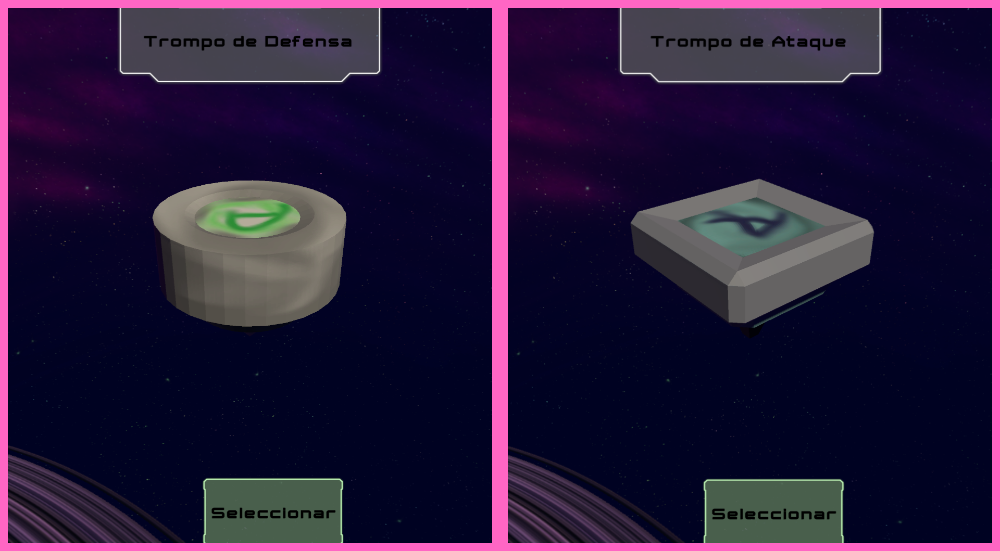
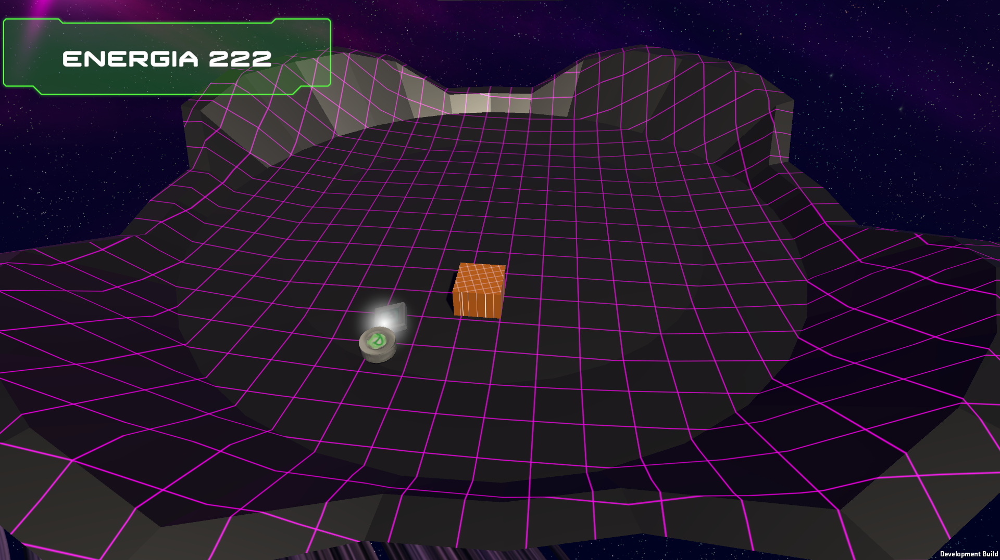

Programación
Trabajé en la programación de los diferentes sistemas y mecánicas necesarias para el funcionamiento del juego. Además de crear y configurar obstaculos y elementos del escenario.
MULTIJUGADOR ONLINE · 3D
Un juego multijugador online donde dos jugadores compiten utilizando trompos con diferentes estadísticas dentro de escenarios llenos de obstáculos.

SOBRE EL PROYECTO

Trompo Juego es un videojuego 3D multijugador centrado en enfrentamientos entre dos jugadores.
Cada jugador controla un trompo dentro de una arena e intenta superar a su rival aprovechando las características de su trompo y las particularidades del escenario.
Actualmente el juego cuenta con dos trompos, cada uno con estadísticas diferentes, y dos escenarios con obstáculos y características propias.
Esto hace que tanto la elección del trompo como la arena modifiquen la forma en que se desarrolla cada enfrentamiento.
MI PARTICIPACIÓN
Trabajé en la programación de los diferentes sistemas y mecánicas necesarias para el funcionamiento del juego. Además de crear y configurar obstaculos y elementos del escenario.
Cree en la implementación de los sistemas necesarios para permitir enfrentamientos entre jugadores a través de internet. Además de configurar la sincronización de los trompos y los elementos del escenario.
Configuré elementos como las características de los trompos, los diferentes sistemas que forman parte de las partidas y los distintos menus que hay en el juego. Tambien
Cree y busque todo lo que es sonoro y visual para el juego, desde los efectos de sonido hasta la música y los elementos visuales que se utilizan en el juego. Además de diseñar los diferentes escenarios y sus obstáculos.
GAMEPLAY
Dos jugadores se enfrentan dentro de una misma arena controlando sus propios trompos.
Los dos trompos disponibles cuentan con estadísticas diferentes, generando distintas formas de jugar.
El juego cuenta con dos escenarios diferentes, cada uno cuenta con obstáculos únicos que hacen los enfrentamientos más dinámicos.
Cada escenario incorpora obstáculos propios que los jugadores deben considerar mientras intentan superar a su rival.
Cada cierto tiempo aparecen boosters en el escenario que los jugadores pueden recoger para recupera la energía de su trompo y obtener una ventaja temporal.
GALERÍA


